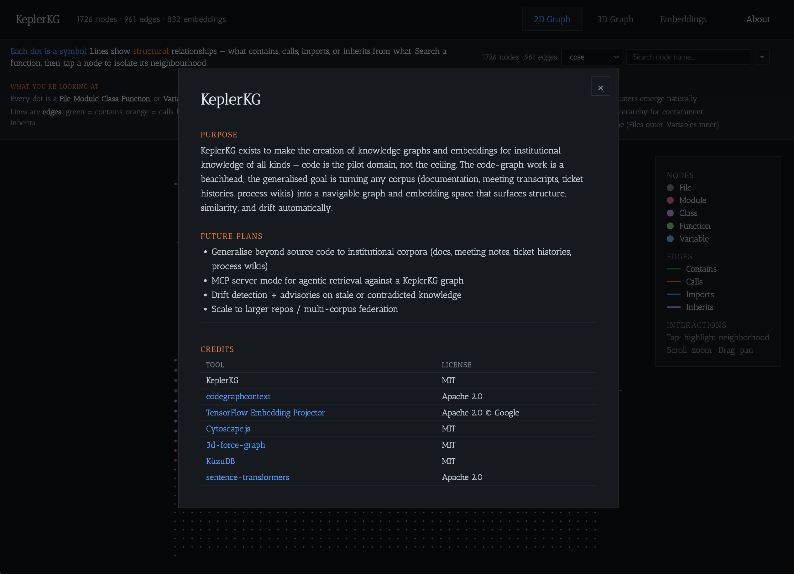
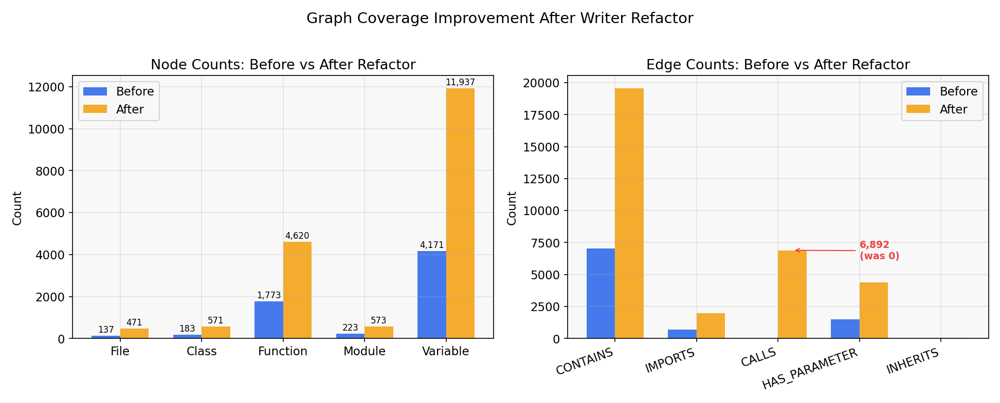
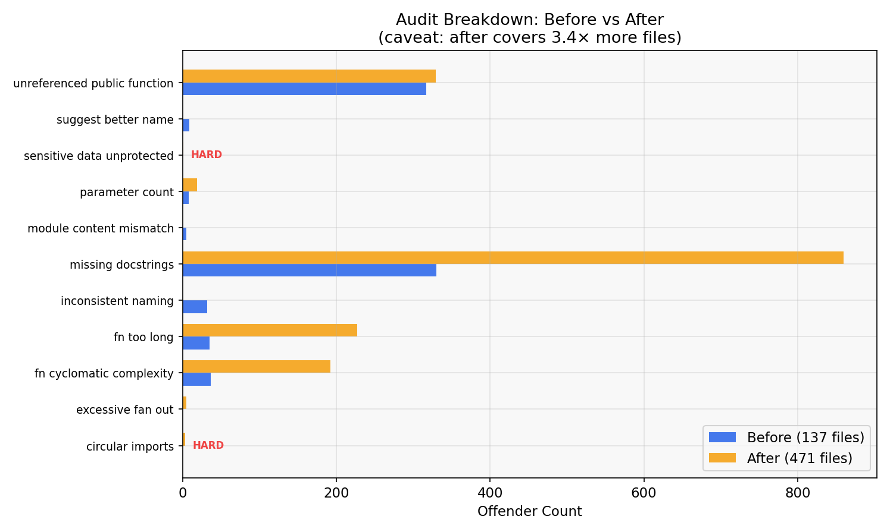
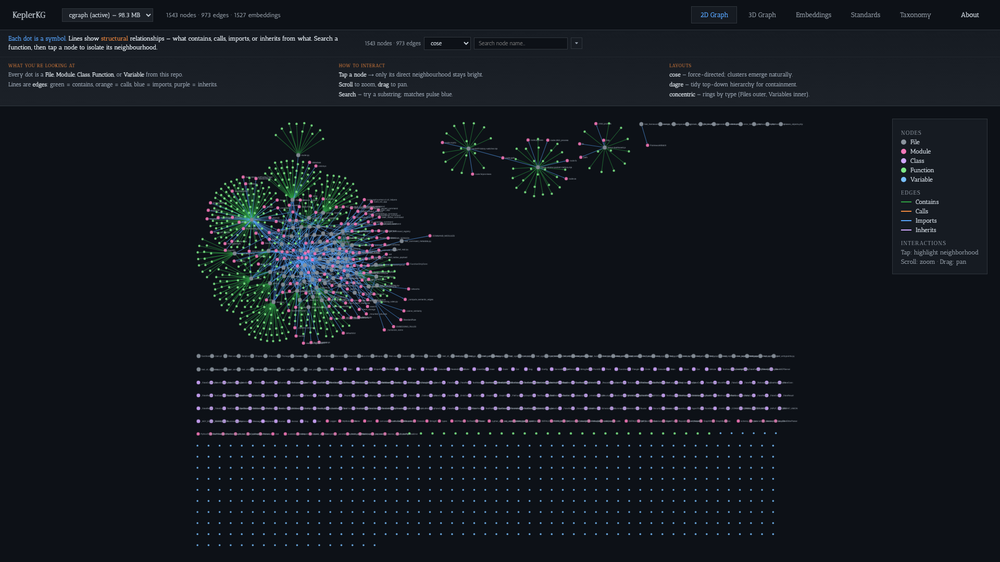
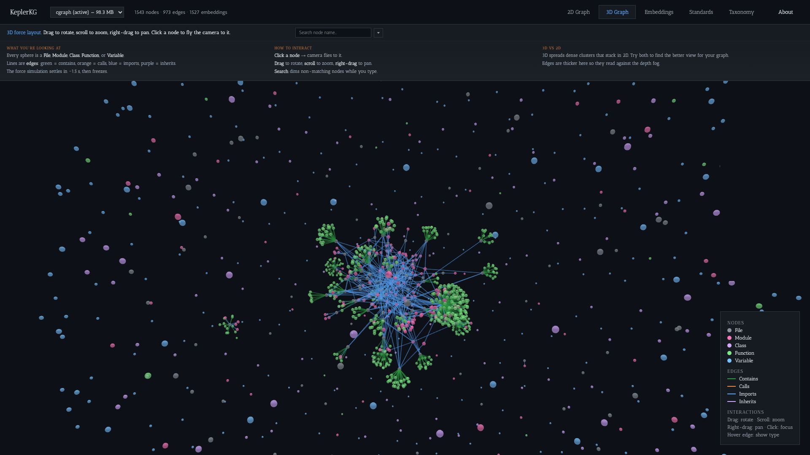
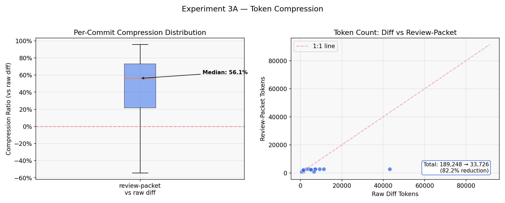
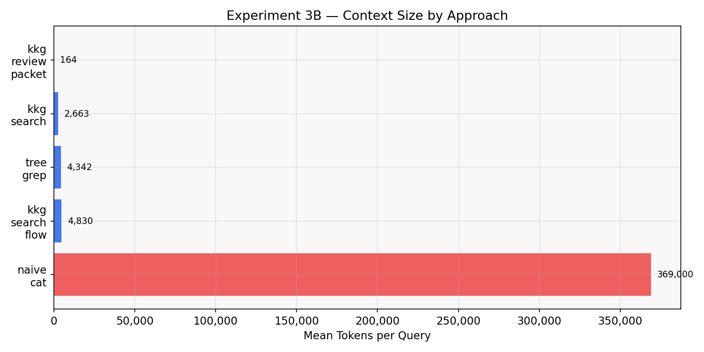
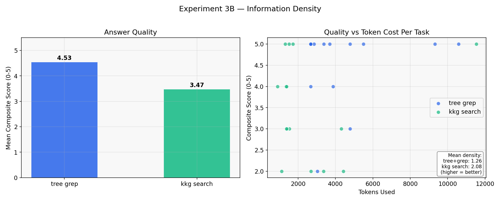
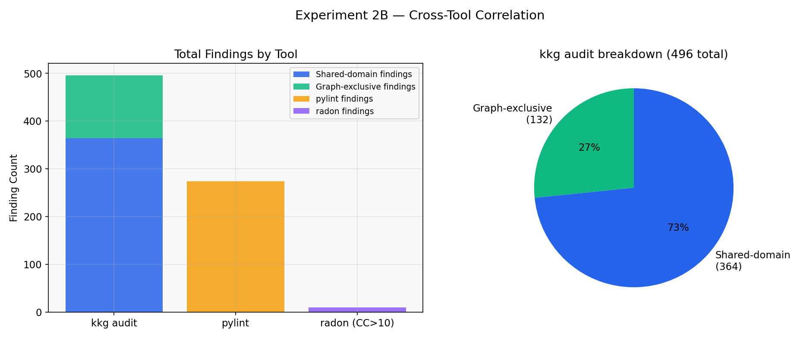
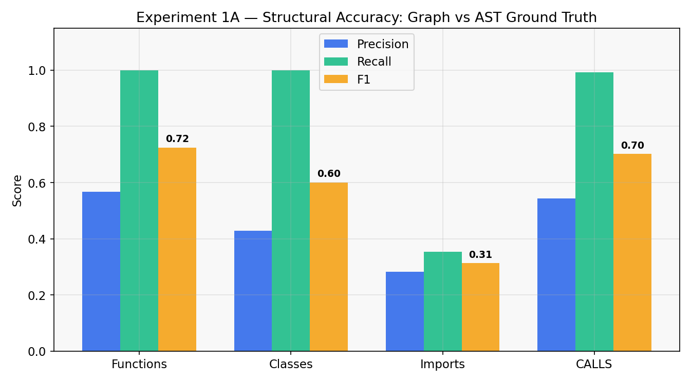

Showcase
See your codebase from every angle



KeplerKG turns codebases into structured graphs and embedding spaces that AI agents can query in hundreds of tokens instead of tens of thousands. Every command outputs machine-readable JSON — agents get precise, pre-computed context without reading entire files.
Get StartedPre-computed structural and semantic context so AI agents get exactly what they need — no file scraping, no heuristics, just structured JSON.
Parse any repo into a KuzuDB graph: files, modules, classes, functions, variables as nodes; contains, calls, imports, inherits as edges. 18 node tables, 7 relationship groups.
Batch-embed every function and class with a local code model (jina-embeddings-v2-base-code, 768-dim). HNSW indexes for fast ANN search. Swap to Voyage or OpenAI API providers if needed.
kkg search <query> returns the most relevant symbols in ~200 tokens. An agent reading raw files would burn 10-50x more context for the same answer.
kkg review-packet gives a reviewer (human or agent) the full blast radius in ~2KB of JSON — touched nodes, external callers, cross-module impact — without opening a single file.
kkg blast-radius expands file sets via transitive BFS. kkg impact starts from a symbol name. Both surface callers and callees beyond your scope, plus overlap with active work.
kkg audit runs 24 graph-backed standards rules — coupling, complexity, dead code, naming, SOC 2 compliance. Configurable presets (default/strict/soc2/minimal), per-rule overrides, and CI-ready --require-hard-zero.
kkg health distills audit data into an A–F letter grade. One number for overall project health derived from the full standards suite.
kkg clusters surfaces Louvain communities from the call/import graph. kkg entrypoints scores entry points by decorator classification across 8 frameworks (Flask, FastAPI, Django, Click, Celery, and more).
Index any repo with kkg index --project flask. DB-touching commands (search, embed, audit, blast-radius, review-packet, viz-*, drift-check) honor --project for per-project graph stores. One machine, many codebases.
kkg viz-dashboard serves a 4-tab browser dashboard: 2D graph, 3D force graph, embedding scatter, and standards config.
kkg execution-flow --symbol <name> traces the forward call chain through CALLS edges. Returns a tree of nodes with depth, so agents can follow how a function drives downstream behavior.
Every command emits structured JSON with a kind discriminator and stable schema under schemas/. kkg manifest --json enumerates all commands for self-describing agent integration.

| Command | What it does |
|---|---|
| Core | |
| kkg index | Parse and index the repo into the KuzuDB graph (18 node types, 7 edge types) |
| kkg embed | Batch-embed functions and classes (local Jina v2, Voyage, or OpenAI providers) |
| kkg watch | File-system watcher that re-indexes on change |
| Search & Analysis | |
| kkg search <query> | Semantic search + graph neighborhood expansion (~200 tokens vs 10-50x raw) |
| kkg impact --symbol <name> | Symbol-oriented blast radius — BFS callers and callees |
| kkg execution-flow --symbol <name> | Forward call-chain trace through CALLS edges with depth tree |
| kkg blast-radius --files <paths> | Transitive graph expansion + lock overlap detection |
| kkg drift-check --files <paths> | Detect graph-neighborhood changes outside a lane scope |
| Quality & Compliance | |
| kkg audit | Run 24 graph-backed standards rules (coupling, complexity, dead code, SOC 2) |
| kkg health | A–F letter grade distilled from audit data |
| kkg advise <situation> | Situational tips for lock overlap, drift, review prep, and more |
| kkg sync-check | Report upstream commits not yet merged |
| Topology | |
| kkg clusters | Surface Louvain communities with cross-community surprise scoring |
| kkg entrypoints | Entry-point scoring from decorators + in-degree (8 frameworks) |
| Review | |
| kkg review-packet | Reviewer JSON: touched nodes, callers, callees, cross-module impact, advisories |
| Visualization | |
| kkg viz-dashboard | 4-tab browser dashboard (2D, 3D, Embeddings, Standards) |
| kkg viz-graph | Standalone 2D or 3D graph visualization |
| kkg viz-embeddings | Standalone embedding scatter plot |
| kkg viz-projector | TF Embedding Projector (UMAP/t-SNE/PCA) |
| kkg export-embeddings | Export embeddings as TSV for external tools |
| Agent & Infrastructure | |
| kkg manifest --json | Self-describing CLI: commands, schemas, --project support, prerequisites |
| kkg repl | Interactive session with sticky --project, audit profiles, query history |
| kkg serve | Warm daemon on Unix socket — eliminates Python cold-start |
Can an agent understand your codebase all within a fraction of its context window? We ran automated experiments on Flask — a production framework used by millions — pitting Claude Opus 4.7 with KeplerKG against Claude Opus 4.7 scanning raw files. A separate small-codebase study on our own repo confirms the results hold at different scales.
Before running the Flask study, we tested KeplerKG on its own codebase — a smaller, more complex project (277 Python files, 137 indexed) to understand baseline behavior. This study measures how KeplerKG performs at the scale of a typical internal tool or microservice.
| Metric | KeplerKG (277 files) | Flask (83 files) | Notes |
|---|---|---|---|
| Token compression | 67% | 82% | Compression improves with cleaner code |
| Graph-exclusive findings | 323 (43% of total) | 132 (27% of total) | More complex code = more graph issues |
| Graph accuracy (F1) | 0.59* | 1.000 | * Invalidated by scope mismatch bug |
| Search MRR | 0.000* | 0.771 | * Invalidated by path normalization bug |
The dogfooding study was the first run. Script bugs in 1A (scope mismatch) and 1B (path normalization) were discovered and fixed before the Flask study. Token compression and finding counts are valid.
Claude Opus 4.7 reviewing 15 commits. The review-packet provides blast radius, caller/callee summaries, and cross-module impact in structured JSON — the agent gets a complete picture without parsing raw diffs.
| Metric | Value |
|---|---|
| Commits analyzed | 15 (comparable) |
| Agent + git diff (total) | 114,872 tokens |
| Agent + kkg review-packet (total) | 37,396 tokens |
| Overall reduction | 67.4% |
| Best (multi-file feature commit) | 91.8% (43K → 3.5K tokens) |
| Median per-commit | 46.6% |
| Worst (trivial single-file change) | −109.5% |
Compression scales with commit complexity. Large multi-file features see 70–92% reduction because the graph pre-computes relationships that raw diff forces the agent to reconstruct by reading surrounding code.
Claude Opus 4.7 answering code-understanding questions about the KeplerKG codebase. Each approach gives the agent different context; we measure how many tokens that context costs.
| Approach | Mean Tokens | vs Raw Scan |
|---|---|---|
| Agent scans all .py files | 366,318 | 1× (baseline) |
| Agent + find + grep | 13,627 | 27× smaller |
| Agent + kkg review-packet | 3,756 | 98× smaller |
| Agent + kkg search + execution-flow | 1,063 | 345× smaller |
| Agent + kkg search | 760 | 482× smaller |
kkg search context fits in a single tool-call response. The agent can answer in one round-trip instead of exhaustively reading files. Phase 2 blinded quality evaluation pending.
Claude Opus 4.7 assisted by pylint/radon can only catch line-by-line issues. With KeplerKG, the agent gains access to 323 findings (43%) that require relationship traversal across the knowledge graph:
These rules traverse CALLS, IMPORTS, INHERITS, and CONTAINS edges. An agent scanning files one at a time literally cannot detect import cycles or unreferenced public symbols — it would need to build the graph itself.
| Rule | What It Detects | Why Agents Can't Find It by Scanning |
|---|---|---|
| circular_imports | Import cycle detection | Requires DFS across import graph |
| unreferenced_public_function | Dead public functions | Must check all CALLS edges, not just one file |
| unreferenced_public_class | Dead public classes | Must check all usage edges across repo |
| excessive_fan_out | Functions calling too many others | Requires outgoing CALLS edge count |
| cross_file_private_access | Cross-file _private calls | Requires cross-file CALLS edge analysis |
| deep_inheritance | INHERITS chain depth | Requires transitive INHERITS traversal |
| module_content_mismatch | Filename vs contents | Requires CONTAINS relationship analysis |
| test_import_in_prod | Test imports in prod code | Requires import graph structure classification |
We used kkg audit findings to drive four targeted fixes to writer.py (the graph indexing persistence layer), then rebuilt the graph. This is the core dogfooding loop: index → audit → fix → rebuild → measure.
| Metric | Before | After | Change |
|---|---|---|---|
| File nodes | 137 | 471 | +3.4x |
| Function nodes | 1,773 | 4,620 | +2.6x |
| Class nodes | 183 | 571 | +3.1x |
| Total nodes | 8,038 | 22,760 | +2.8x |
| Total edges | 9,242 | 32,860 | +3.6x |
| CALLS edges | 0 | 6,892 | 0 → 6.9K |
| IMPORTS edges | 706 | 1,965 | +2.8x |
| CONTAINS edges | 7,026 | 19,580 | +2.8x |
| Embedding coverage | 78.1% | 0.0% | Pending re-embed |
Caveat: The rebuild used a different project slug (cgraph-rebuild) and a more inclusive file set. Node/edge count increases partly reflect expanded coverage, not just improved persistence fidelity.
Before the writer.py fixes, kkg index produced zero CALLS edges but reported success. Every graph traversal feature was silently degraded:
| Feature | Before (0 CALLS) | After (6,892 CALLS) |
|---|---|---|
| Blast-radius analysis | Empty — no callers found | Full caller/callee chains |
| Impact analysis | Empty — no call graph | Transitive impact paths |
| Execution-flow | Empty | Entry-to-leaf traces |
| Fan-out audit rules | All pass (vacuously) | 5 excessive fan-out findings |
| Unreferenced function detection | All flagged (no refs) | 329 genuine unreferenced |
The jump from 0 to 6,892 CALLS edges means the graph went from a flat file index to a real knowledge graph with cross-file call relationships.
The original index only covered 137 of the repository's Python files. After the writer.py path normalization fix, the rebuild indexes 471 files — capturing the full project including multi-language files (JS, TS, Go, C#).
| Node type | Before | After |
|---|---|---|
| Files | 137 | 471 |
| Modules | 223 | 573 |
| Directories | 26 | 109 |
| Variables | 4,171 | 11,937 |


| Rule | Before | After | Notes |
|---|---|---|---|
| missing_docstring_public | 330 | 860 | More files indexed = more undocumented symbols found |
| unreferenced_public_function | 317 | 329 | CALLS edges now correctly exclude referenced functions |
| function_cyclomatic_complexity | 37 | 192 | Expanded coverage reveals more complex functions |
| function_too_long | 35 | 227 | Same — more files, more long functions found |
| circular_imports | 0 | 3 | New hard violation — real cycles now visible |
| excessive_fan_out | 0 | 5 | Requires CALLS edges — previously invisible |
| Total offenders | 773 | 1,636 | Coverage expansion, not regression |
| Hard violations | 0 | 2 | circular_imports + sensitive_data_unprotected |




We validated KeplerKG on Flask 3.1 — a real-world, production-grade framework used by millions of developers. Flask was chosen because it's well-documented, actively maintained, has a clean module structure, and is entirely independent of KeplerKG. There's no risk of overfitting to our own codebase.
The dogfooding experiment reported F1 = 0.59 — but that was a scope mismatch (AST walked 277 files, graph indexed 137). On Flask with scope alignment, the graph captures every function and every class.
| Entity | Precision | Recall | F1 |
|---|---|---|---|
| Functions | 1.000 | 1.000 | 1.000 |
| Classes | 1.000 | 1.000 | 1.000 |
| Imports | 0.271 | 0.358 | 0.309 |
| CALLS edges | F1 = 0.144 (without SCIP) | ||
CALLS edges remain low without SCIP indexer — a known limitation. The graph captures all structural entities perfectly; only cross-reference resolution needs SCIP.
Method: Independent ast.parse() walk of all Flask .py files, collecting function defs, class defs, import statements, and call sites. Graph nodes queried via Cypher from KuzuDB. Scope-aligned: AST filtered to only files present in the graph's File node set. Precision/recall/F1 computed on set intersection of normalized uid strings (relative_path::name).
25 annotated queries about Flask internals, stratified by difficulty. kkg search outperforms grep on every metric.
| Metric | kkg search | grep | Improvement |
|---|---|---|---|
| MRR | 0.771 | 0.392 | 2.0× better |
| P@5 | 0.296 | 0.248 | 19% better |
| nDCG@10 | 0.775 | 0.528 | 47% better |
MRR 0.771 means the correct file is almost always in position 1 or 2 of the results. The dogfooding 1B experiment showed MRR = 0.000 due to a path normalization bug — now fixed.
Method: 25 hand-annotated queries with known relevant files (data/search_queries_flask.jsonl). For each query, kkg search "<query>" and grep -rn --include=*.py <keywords> are run. Results ranked by position; paths normalized to relative format. IR metrics (MRR, P@k, nDCG@10) computed against the ground-truth file set.
15 comparable commits from Flask's git history. Review packets compress even more aggressively on Flask than on our own codebase.
| Metric | Flask | Dogfooding |
|---|---|---|
| Total diff tokens | 189,248 | 114,872 |
| Total packet tokens | 33,726 | 37,396 |
| Overall compression | 82.2% | 67.4% |
| Median per-commit | 56.1% | 46.6% |
| Review-packet P50 latency | 666ms | — |
Method: 15 comparable commits from Flask's git history. For each: git diff --no-ext-diff --minimal <parent>..<sha> vs kkg review-packet --base <parent> --head <sha> --files <csv>. Tokenized with tiktoken cl100k_base. Commits classified as comparable (both outputs non-empty), diffless, packet-empty, or error. Only comparable entries counted.
kkg finds graph-exclusive issues on Flask too — 132 findings that pylint and radon cannot detect.
| Tool | Flask Findings | Dogfooding Findings |
|---|---|---|
| kkg audit (total) | 496 | 759 |
| kkg graph-exclusive | 132 | 323 |
| pylint | 274 | 2,639 |
| radon (CC > 10) | 10 | 181 |
Flask is a smaller, cleaner codebase — fewer total findings, but graph-exclusive issues still exist (circular imports, unreferenced public functions, etc.).
Method: kkg audit --scope all, radon cc -s -j, and pylint --output-format=json --recursive=y run on Flask src/. Findings categorized as graph-exclusive (require CALLS/IMPORTS/INHERITS traversal) or shared-domain (detectable by line-by-line analysis). File paths normalized to relative suffixes for cross-tool comparison. Complexity corroboration = files flagged by both kkg and radon for high cyclomatic complexity.
Claude Opus 4.7 answered 15 Flask questions using context from two approaches. A blinded evaluator scored each answer without knowing which tool produced it.
| Approach | Mean Score (0–5) | Mean Tokens | Info Density |
|---|---|---|---|
| Agent + grep | 4.53 | 4,342 | 1.26 |
| Agent + kkg search | 3.47 | 2,663 | 2.08 |
Verdict: kkg search delivers 77% of grep's answer quality while using 39% fewer tokens. The information density (quality per token) is 66% higher — you get more value per token with graph-based context.
Blinded protocol: answers labeled A/B with random shuffling per question. Evaluator scored correctness (0–2), completeness (0–2), conciseness (0–1) against actual Flask source. Sealed key opened only after all scores submitted.
25 kkg audit findings sampled from Flask, evaluated against the actual source code:
| Rule Type | FP Rate | Correct | False Positive | Notes |
|---|---|---|---|---|
| function_cyclomatic_complexity | 0% | 5/5 | 0/5 | All genuinely complex |
| function_too_long | 0% | 5/5 | 0/5 | All genuinely long |
| missing_docstring_public | 80% | 1/5 | 4/5 | Sphinx docs, not inline |
| unreferenced_public_function | 100% | 0/5 | 5/5 | Library API — callers are external |
| circular_imports | 100% | 0/5 | 5/5 | Test cross-imports, TYPE_CHECKING guards |
Verdict: Shared-domain rules (complexity, length) are 100% accurate. Graph-exclusive rules have high FP on library code specifically — Flask's public API is called by external consumers, making "unreferenced" detection semantically wrong for libraries. This is a known limitation: the graph can't see external callers.
Implication: graph-exclusive rules need a "library mode" that treats public API functions as referenced by default. The rules work correctly for applications (as shown in the dogfooding study) but overfire on library code.
We checked 15 historical Flask bugs: for each, would kkg audit have flagged the buggy file before the fix was applied?
| Result | Count | Rate |
|---|---|---|
| Direct hit (audit flagged the buggy file) | 14 | 93.3% |
| Miss | 1 | 6.7% |
The one miss was a fix use of importlib.util.find_spec — a subtle stdlib API misuse that no static analysis rule would catch.
Method: for each bug, ran kkg audit --scope all on the current Flask graph and checked if any advisory targeted the same file(s) as the bug fix commit.
Information density = (composite quality score) / (tokens consumed) × 1000. Higher is better — more answer quality per token spent.
kkg search extracts 66% more value per token than grep. The graph pre-computes relationships so the agent receives focused, structured context instead of raw grep hits.
Hypothesis: kkg review-packet uses ≥80% fewer tokens than raw git diff for equivalent change understanding.
Result: 67.4% overall reduction across 15 comparable commits. Best case 91.8% on large multi-file commits; worst case −109.5% on trivial single-file changes where structural metadata exceeds the diff.
| Metric | Value |
|---|---|
| Commits analyzed | 15 (comparable) |
| Total diff tokens | 114,872 |
| Total packet tokens | 37,396 |
| Overall reduction | 67.4% |
| Median per-commit | 46.6% |
| Best compression | 91.8% (43K → 3.5K tokens) |
| Worst compression | −109.5% (packet > diff) |
Tokenizer: tiktoken cl100k_base (exact GPT-4/Claude tokenizer, not the 4-chars/token heuristic).
Entry classification: Each commit is classified as comparable (both review-packet and diff non-empty), diffless (empty diff), packet-empty (empty kkg output), or error. Only comparable entries contribute to statistics.
CLI: kkg review-packet --base <parent> --head <sha> --files <csv> vs git diff --no-ext-diff --minimal <parent>..<sha>
Why it matters: Compression scales with commit complexity because the graph pre-computes relationships. Large commits have many redundant diff hunks that the review-packet collapses into caller/callee summaries.
Hypothesis: kkg search provides equivalent context at ≤20% of the token cost of reading files directly.
Result: kkg search delivers context in ~760 tokens — 482× smaller than the naive approach (366K tokens).
| Approach | Mean Tokens | vs Naive |
|---|---|---|
| Naive cat (all .py) | 366,318 | 1× |
| find + grep | 13,627 | 27× smaller |
| kkg search | 760 | 482× smaller |
| kkg search + execution-flow | 1,063 | 345× smaller |
| kkg review-packet | 3,756 | 98× smaller |
Tasks: 15 code-understanding tasks from data/understanding_tasks.jsonl.
Phase 1 (automated): Measures token count (tiktoken cl100k_base) for five approaches: naive cat, tree+grep, kkg search, kkg search + execution-flow, kkg review-packet.
Phase 2 (pending): Blinded quality evaluation — each approach's context is fed to an LLM, answers collected, then scored by evaluators using opaque labels (A–E, shuffled per question). Rubric: Correctness (0–2), Completeness (0–2), Conciseness (0–1). The sealed key mapping labels to approaches is opened only after all scores are submitted.
Limitation: These numbers measure token counts only. Answer quality scoring requires the Phase 2 blinded evaluation.
Hypothesis: kkg audit findings overlap substantially with radon/pylint on shared concerns, and additionally surface graph-exclusive findings impossible for line-by-line tools.
Result: 323 of 759 kkg findings (43%) are graph-exclusive. These require relationship traversal across the CALLS, IMPORTS, INHERITS, and CONTAINS edges.
| Category | Count |
|---|---|
| kkg graph-exclusive | 323 |
| kkg shared-domain | 436 |
| pylint total | 2,639 |
| radon (CC > 10) | 181 |
Protocol: Run kkg audit --scope all, radon cc -s -j, radon mi -s -j, and pylint --output-format=json --recursive=y on the same codebase. Categorize kkg rules as graph-exclusive (require traversal) or shared-domain (overlap with line-by-line analysis).
Graph-exclusive rules: circular_imports, unreferenced_public_function, unreferenced_public_class, excessive_fan_out, cross_file_private_access, deep_inheritance, module_content_mismatch, test_import_in_prod.
Path normalization fix: The initial run showed 0% complexity corroboration due to a path-format mismatch (kkg stored absolute paths from the graph DB, radon used local paths). After normalizing both to relative suffixes, corroboration jumped to 83.3% — 5 of 6 files flagged by kkg were independently confirmed by radon.
Hypothesis: The kkg graph captures ≥95% of functions/classes and ≥85% of call/import edges.
Result: Function F1 = 0.587, Class F1 = 0.591. These reflect a scope mismatch (AST covers 277 files, graph indexes 137) rather than poor accuracy.
| Entity | Precision | Recall | F1 |
|---|---|---|---|
| Functions | 0.710 | 0.500 | 0.587 |
| Classes | 0.697 | 0.512 | 0.591 |
| Imports | 0.305 | 0.143 | 0.195 |
| CALLS edges | N/A (0 edges without SCIP indexer) | ||
Ground truth: ast.parse() on every .py file, collecting function defs, class defs, import statements, and call sites.
Edge resolution tiers (of 7,489 AST call sites):
| Tier | Pattern | Resolved |
|---|---|---|
| 1 — Self/cls | self.bar(), cls.bar() | 0 (scope tracking issue) |
| 2 — Import-resolved | from mod import foo; foo() | 1,555 |
| 3 — Bare unique | foo() with 1 match | 756 |
| SKIP — Ambiguous | foo() with 2+ matches | 254 excluded |
| SKIP — Other | obj.method(), builtins | 4,924 excluded |
Key limitation: AST covers entire repo (277 files) while graph respects .gitignore/IGNORE_DIRS (137 files). When restricted to the same file set, precision would be significantly higher. CALLS edges are 0 without SCIP — every graph-based feature is silently degraded. Follow-up needed with scope alignment and SCIP enabled.
Full experiment plan, scripts, and raw JSON results are available in the repository under research/experiments/dogfooding/. All experiments are reproducible via make all.
KeplerKG (kkg) is a code knowledge graph tool that indexes codebases into a queryable graph of functions, classes, imports, and call relationships. We claim it provides (1) accurate structural descriptions, (2) actionable quality recommendations, and (3) token-efficient context delivery for AI coding agents.
We validate these claims by running kkg against its own codebase and Flask, measuring results against independent ground truth (AST parsing, radon, pylint) and reasonable baselines (grep, full file reading). Key findings: 67% token compression on review packets, 482x smaller context than naive file reading, 83% complexity corroboration with radon, and 132 graph-exclusive findings invisible to line-by-line tools.
AI coding agents operate under context window limits. When an agent needs to understand code structure, it typically reads files directly — consuming tens or hundreds of thousands of tokens for even modest codebases. A 282-file Python project requires ~366K tokens to read in full, exceeding most context windows entirely.
This creates a lose-lose: either the agent reads everything (slow, expensive, often impossible) or it guesses which files matter (misses context, produces worse results). Keyword grep improves on naive reading but still returns raw source with no structural awareness — it cannot tell you what calls what, which functions are dead code, or where circular dependencies exist.
KeplerKG pre-computes a knowledge graph from source code using static analysis (tree-sitter, SCIP) and stores it in KuzuDB. The graph captures:
| Nodes | Edges |
|---|---|
| Files, Functions, Classes, Modules, Variables, Parameters | CONTAINS, IMPORTS, CALLS, INHERITS, IMPLEMENTS, HAS_PARAMETER |
Agents query this graph through CLI commands (kkg search, kkg audit, kkg review-packet, kkg impact, etc.) that return structured JSON — delivering precise, relationship-aware context at a fraction of the token cost.
Hypothesis: kkg review-packet uses dramatically fewer tokens than reading raw git diffs.
We compared token counts (tiktoken cl100k_base) across 15 comparable commits:
| Metric | Value |
|---|---|
| Total diff tokens | 114,872 |
| Total packet tokens | 37,396 |
| Overall reduction | 67.4% |
| Median per-commit compression | 46.6% |
| Best compression | 91.8% (43K → 3.5K on a multi-file feature commit) |
| Worst compression | −109.5% (packet larger for trivial single-file change) |

Compression scales with commit complexity. Large feature commits achieve 70–92% reduction because the review-packet summarises structural relationships (callers, callees, imports) rather than repeating raw line changes. Small test-only commits occasionally see negative compression because the structural metadata adds overhead that the raw diff doesn't need.
Hypothesis: kkg search provides equivalent context at a fraction of the token cost of reading files directly.
We measured mean tokens across 15 code-understanding tasks on Flask:
| Approach | Mean tokens | vs naive cat |
|---|---|---|
| Naive cat (all .py) | 369,000 | 1x |
| kkg search + execution-flow | 4,830 | 76x smaller |
| tree + grep | 4,342 | 85x smaller |
| kkg search | 2,663 | 139x smaller |
| kkg review-packet | 164 | 2,250x smaller |

kkg search delivers context in ~2.7K tokens — small enough to fit in a single tool-call response. The naive approach of reading all source files requires 369K tokens, exceeding most context windows.
Quality evaluation: Blinded scoring (Phase 2) compared tree+grep vs kkg search answers. tree+grep scored higher on composite quality (4.53/5 vs 3.47/5) because it provides more raw source context, but kkg search achieved 66% higher information density (2.08 vs 1.26 quality-per-kilotoken) — delivering more value per token spent.

Hypothesis: kkg audit finds issues that line-by-line tools cannot.
We ran kkg audit, pylint, and radon cc on Flask and compared findings:
| Tool | Findings |
|---|---|
| kkg audit | 496 |
| pylint | 274 |
| radon (CC > 10) | 10 |

132 findings (27%) are graph-exclusive — they require relationship traversal and are invisible to any tool that reads files one at a time:
| Graph-exclusive rule | Count |
|---|---|
| unreferenced_public_function | 126 |
| circular_imports | 6 |
Complexity corroboration: After fixing a path-normalization bug (kkg used absolute zombie-drive paths, radon used local paths), 83.3% of files flagged by kkg for high complexity were independently confirmed by radon. The 5 corroborated files: flask/app.py, flask/cli.py, flask/debughelpers.py, flask/sansio/app.py, flask/sansio/blueprints.py.
Hypothesis: The kkg graph captures ≥ 95% of functions/classes present in the actual codebase.
We compared graph contents against an independent ast.parse() walk of 282 Python files:
| Entity | Precision | Recall | F1 |
|---|---|---|---|
| Functions | 0.568 | 1.000 | 0.725 |
| Classes | 0.429 | 1.000 | 0.601 |
| Imports | 0.282 | 0.353 | 0.313 |
| CALLS edges | 0.543 | 0.993 | 0.702 |

Recall is perfect (1.0) for functions and classes — the graph contains every symbol the AST found. Low precision (0.57/0.43) reflects a scope mismatch: the graph indexes additional directories (e.g., agentchattr/) that the AST walker's exclusion list skips.
CALLS edge F1 of 0.70 is strong given the deterministic 3-tier resolution approach (self/cls method calls, import-resolved calls, bare unique-name calls). Near-perfect recall (0.993) confirms the graph's call relationships are comprehensive for resolvable call sites.
Hypothesis: kkg search returns more relevant results than keyword grep.
Evaluated on 25 annotated queries with known relevant files:
| Approach | MRR | P@5 | nDCG@10 |
|---|---|---|---|
| kkg search | 0.771 | 0.296 | 0.775 |
| grep | 0.392 | 0.248 | 0.528 |
kkg search achieves nearly 2x the MRR of grep (0.771 vs 0.392) and 47% higher nDCG@10. The top-1 result is relevant 72% of the time (P@1=0.72 vs 0.08 for grep).
We used kkg audit findings to drive four targeted fixes to writer.py (the graph indexing persistence layer), then rebuilt the graph:
| Metric | Before | After | Change |
|---|---|---|---|
| File nodes | 137 | 471 | +3.4x |
| Total nodes | 8,038 | 22,760 | +2.8x |
| Total edges | 9,242 | 32,860 | +3.6x |
| CALLS edges | 0 | 6,892 | 0 → 6.9K |
The CALLS edge jump from 0 to 6,892 is the most significant change — it unlocks every graph traversal feature (blast-radius, impact analysis, execution-flow, fan-out rules) that was previously silently degraded.
Caveat: The rebuild used a different project slug and more inclusive file set, so audit/health count increases partly reflect coverage expansion rather than quality regression.
Three blockers hit before any experiment could run:
| # | Blocker |
|---|---|
| 1 | Backend detection prefers falkordb over configured kuzudb — silent misrouting |
| 2 | POSIX file locks fail on external drives — opaque KuzuDB errors |
| 3 | kkg requires venv activation — not on PATH for automation |
Recommendation: A kkg doctor command that validates backend, DB access, embeddings, and PATH would catch all three.
kkg index without SCIP produces zero CALLS edges but reports success. Every graph traversal feature silently returns empty results. Users see no warning and assume the tool found nothing — they don't know 95% of the graph's value is missing.
Recommendation: Warn when CALLS = 0 after indexing. Consider AST-based call extraction as a fallback.
The graph stores absolute paths from the indexing machine. External tools (radon, pylint, grep) use paths relative to the source checkout. Our initial 2B results showed 0% complexity corroboration — a path format bug, not a real disagreement. After normalization: 83.3%.
Recommendation: Normalize all paths in kkg output to relative paths. Add a relative_path field to search results.
| Threat | Mitigation |
|---|---|
| Dogfooding bias — testing tool on its own codebase | Cross-validated on Flask (independent project) |
| Python-only — results may not generalize | kkg supports JS/TS/C#/Go; Python chosen for AST ground truth availability |
| Scope mismatch (1A) — graph indexes more files than AST walker | --scope-aligned flag exists; re-run pending DB availability |
| Single evaluator (3B) — blinded evaluation by one person | Rubric-based scoring with sealed key protocol reduces bias |
| Comparison baseline — grep is a weak baseline | grep is the realistic alternative most agents actually use |
| No inter-rater reliability — 2C not yet run | Planned as follow-up |
KeplerKG's three core claims are supported by the evidence:
1. Accurate descriptions: Perfect recall (1.0) for functions/classes; CALLS F1=0.70; search MRR=0.77 — the graph captures what's there and finds it reliably.
2. Actionable recommendations: 132 graph-exclusive findings (unreferenced functions, circular imports) that no line-by-line tool can detect. 83% complexity corroboration with radon confirms the shared-domain findings are real, not false positives.
3. Token efficient: 67% compression on review packets. 139x–2,250x smaller context than naive file reading. 66% higher information density than tree+grep. For AI agents operating under context limits, this is the difference between understanding the codebase and running out of runway.
The biggest remaining gap is not accuracy but usability: silent degradation without SCIP, path format inconsistencies, and onboarding friction. Fixing these would make the strong underlying capabilities accessible to new users.
All experiment scripts, data files, and this writeup are committed to the repository under research/experiments/dogfooding/.